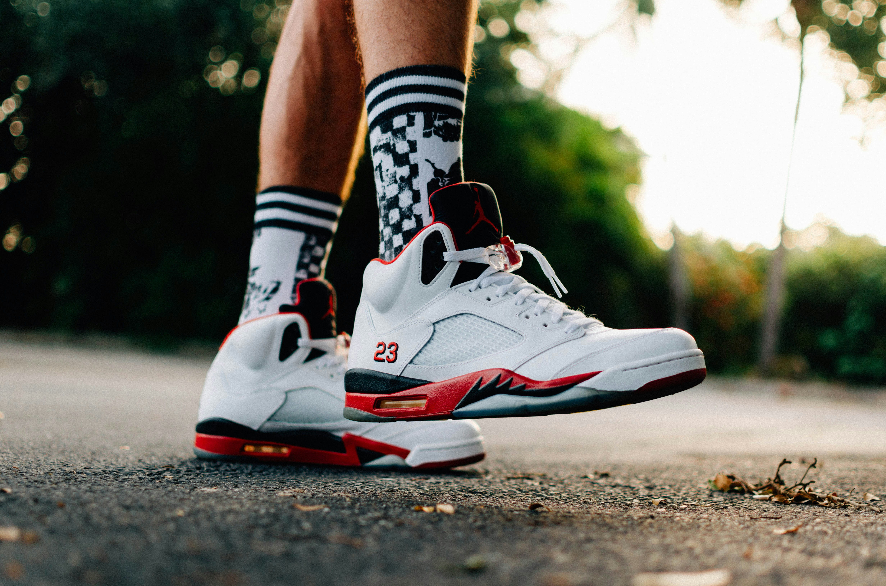

Nike Air Jordan 5 Retro "Fire Red"
Fire Red

Descripción general
Las Nike Air Jordan 5 Retro "Fire Red" son uno de los colorways OG más icónicos de la Jordan 5, diseñadas por Tinker
Hatfield y lanzadas por primera vez en 1990.
Características principales
- Cuero blanco suave (tumbled/smooth leather, según versión).
- Panel lateral con malla translúcida (netting).
- Ojalillos y detalles en TPU negro.
- Nike Air bordado en el talón en las ediciones OG/Retro fieles (2020, 2025).
- Número "23" bordado en el lateral del talón, característico de este colorway y único entre los OG AJ5.
Regresar